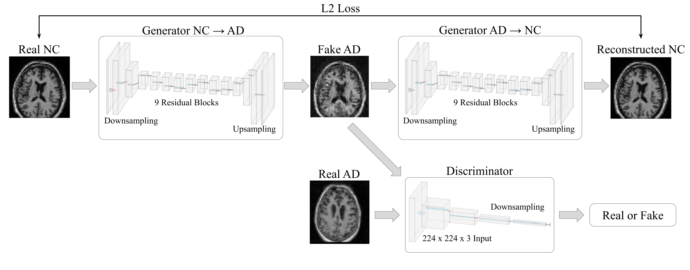

Diagnosing Alzheimer’s Disease using Deep Learning
An MRI based CNN architecture to diagnose Alzheimer's Disease using CycleGAN data augmentation. Serves as both a medical tool and a proof of concept for the use of GANs in data augmentation.
An MRI based CNN architecture to diagnose Alzheimer's Disease using CycleGAN data augmentation. Serves as both a medical tool and a proof of concept for the use of GANs in data augmentation.
Two types of preprocessing were tested: Skull Stripping and TorchIO transforms. A sample without Alzheimer's is shown on the left and a sample with Alzheimer's is shown on the right. In each image, the first column is the original, the second column is with skull stripping, and the third column is with TorchIO transforms.
The CycleGAN model architecture is shown below.
The model consists of two generators, where one is trained to convert NC samples to AD samples and the other is trained to convert AD samples to NC samples. During training, a real NC image is passed through the first generator, and the resulting fake AD image is compared with an separate real AD image through the discriminator, computing GAN loss, shown in equation (1). G represents the generator, DY represents the discriminator for AD samples, x represents a real NC image, and y represents a real AD image.
This process is repeated, starting with a real AD image, resulting in another GAN loss, represented in equation (2). F represents the generator, DX represents the discriminator for NC samples, x represents a real NC image, and y represents a real AD image.
The fake images are also passed through the second generator, returning a reconstructed version of the original image. Cycle consistency loss is computed by summing the losses from comparing the original NC image x with its reconstructed image F(G(x)) and comparing the original AD image y its reconstructed image G(F(y)). This is represented in equation (3).
The overall loss function incorporates both GAN losses and the cycle consistency loss, and is represented in equation (4). λ is a constant representing how much weight is placed on the cycle consistency loss, and λ = 10 is used as described in the paper [7]. The objective of this loss function is to minimize G and F, which represent loss for the two generators, and maximize Dx and Dy, which are the two discriminators.
The generator is based on the ResNet architecture, and consists of downsampling, 9 residual blocks, and upsampling. Instance normalization and reflection padding is used. The tanh activation function is used in its last layer to scale the output image between -1 and 1. The generator architecture is shown below.
The discriminator is a CNN using PatchGANs, which classify whether an image is real or fake based on patches. This decreases the amount of parameters needed and is effective for images with high resolutions. The model also uses LeakyReLU as its activation function and utilizes instance normalization. The discriminator architecture is shown below.
I used transfer learning with ResNet50 as the pretrained model. The model takes in three images as input, which are each fed through a ResNet50 CNN, and concatenated into a dense layer. Dropout is then applied and the final layer returns the diagnosis. A diagram of the model is shown below.
The model was fine-tuned using the Adam optimizer with a learning rate of 0.0001, and trained for 50 epochs with a batch size of 32. A training, validation, and testing split of 80%-10%-10% was used. Models were evaluated based on accuracy, precision, recall, and F1 score.
CycleGAN generated samples are shown below.


Results for models using the different types of preprocessing are shown below.
Results for models with and without GAN augmentation are shown below.
In this study, we constructed convolutional neural network models utilizing the ResNet50 architecture to diagnose Alzheimer’s disease using MRI scans, with variants using one input and three inputs. We also address the problem of size limitations in medical datasets with the use of generative adversarial networks (GANs). Using the ADNI1 dataset, we demonstrated that the addition of GANs can greatly improve deep learning classification accuracy for Alzheimer’s disease diagnosis. Specifically, we used CycleGAN to generate images of one class using the other, balancing the dataset and increasing its overall size. Our results show that classification accuracy improved substantially, with F1 scores increasing from 0.863 to 0.946 for the standard model and 0.891 to 0.951 for the model utilizing skull stripping. Due to the lack of large datasets in many medical fields, the results obtained in this study can be generalized to many other fields as well. Overall, with promising results in data augmentation, GANs have potential to significantly improve upon classification tasks across a wide variety of applications.